YouTube studio has made it easier for creators to access and scrutinize metrics like views, subscribers, traffic source, user demographics, and much more. You can use the vital details to produce quality videos, build a community, get better audience retention, manage engagement, etc.
Contents
What is YouTube Studio?
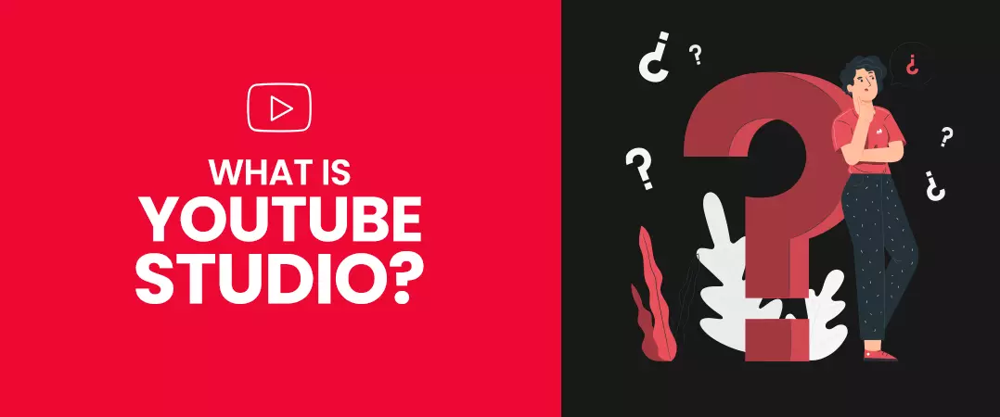
YouTube Studio is a software tool from YT that helps YouTubers upload/manage videos and analyze their performance. Metrics associated with your content and audience are pulled together on a single dashboard, giving you easy access to all vital statistics.
Why do you create videos? – certainly not because you have nothing better to do with your time. You may want to market your product or showcase your creativity to an interested audience. As such, you would like to know if your videos perform to your expectations. Using the insights available on the YouTube Studio dashboard, you can edit your videos interact with your audience at the right time, schedule your video content at optimum intervals, produce content for the targeted audience, etc.
Active users on YouTube watch more than a billion hours of content every day with billions of views – you need to make sure that your content gets a significant portion of this engagement. When you are eligible for the YouTube partner program, you can use the monetization tab. Many YouTubers buy real YouTube subscribers to complete YouTuber's eligibility requirements for monetization.
How to Use YouTube Studio
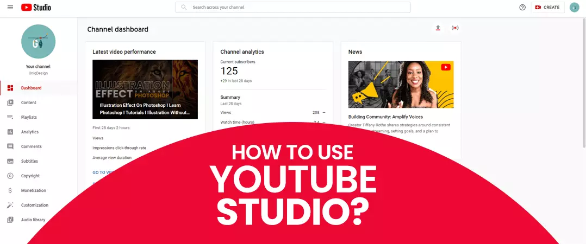
We're going to look at how you can access YouTube Studio on desktop and mobile separately.
How to Access YouTube Creator Studio on Desktop
Step 1: Sign in to YT with your Google account.
Step 2: Click on your profile icon on the top right corner of your screen.
Step 3: Select YouTube Studio from the drop-down.
How to Access YouTube Creator Studio on Mobile
Step 1: Navigate to the YouTube app on your device.
Step 2: Sign in to your account.
Step 3: Download the YouTube studio app from the play store (Android) or Apple store (iOS).
Step 4: Open the YouTube studio app and sign in with your account.
YouTube Studio Dashboard
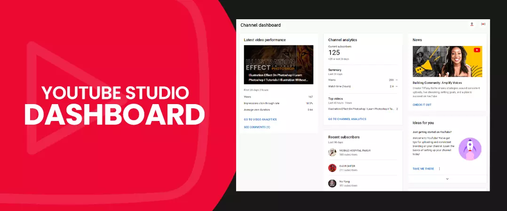
A dashboard is a place where you can address different channel issues and uncover areas that require improvement. You can quickly sort ownership claims or conflicts, analyze copyright strikes, monetization issues and even pending channel invitations.
How to Access Your Channel Dashboard
Step 1: Sign in to YouTube.
Step 2: Click your profile picture on the top-right screen corner.
Step 3: Click on YouTube studio from the drop-down.
Channel Dashboard Walkthrough
Let us look at cards that are available on your channel dashboard.
- Channel violation: YouTube's warnings for flaunting its guideline, channel strikes.
- Creator insider: Shows recent content uploaded by creator insider channel.
- News: Reveals the latest buzz in the YouTube community.
- Known issues: Shows occurrences on YT that affect channels and users.
- Recent subscribers: Reveals users who subscribed to your channel recently. You can arrange the list by subscriber count and define a date range to view the report.
- What's new in-studio: Notifications about new tools and features introduced in the creator studio are found here.
- Ideas for you: YouTube's recommendation based on your channel activities.
- Important notifications: Alerts regarding your videos and channel status.
- Latest post: Report on how well your viewers received your community post. This section is visible only when you meet the eligibility for accessing the community tab.
- Latest video performance: Data on how your latest video or live streams performed with your audience.
- Latest comments: Report on statements that await your reply.
Some Important Notifications
The following notifications are vital and will show up in the 'Important Notification' section of your channel dashboard.
- Monetization: You get updates for when your channel is eligible for monetization, not eligible or awaiting approval.
- Copyright: You receive notifications when your channel is hit by a copyright strike or claim.
YouTube Studio Analytics
1. The Overview Tab
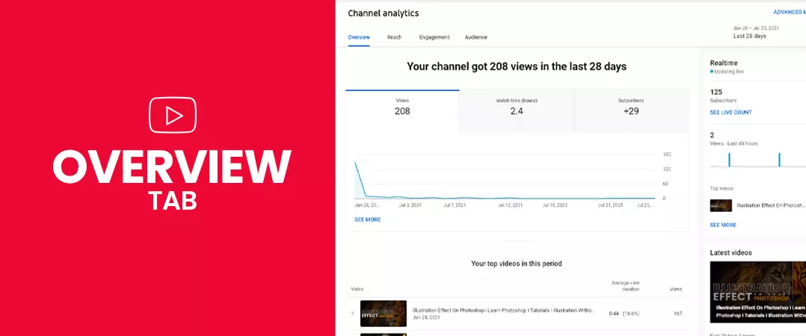
Watch Time
We can call it the aggregation of the total time users have invested watching your channel content. To get a bird's eye view on the changing watch time trend, you need to press the 'See More' link. Keep an eye out for sudden spikes in the graph, and determine the reason for this occurrence – may be your new video was a big hit with your audience.
Subscribers
The subscriber section under the overview tab displays the total number of users converted as your channel subscribers for the selected duration of time.
Views
This metric shows you the total number of views your channel gathered in the specified time duration. Press on the views section to draw a comparison with your average channel views.
When you click on the "See More" link available below your graph, you can undertake a more in-depth analysis of the channel performance. For example, you can compare two metrics (views vs. card clicks) to draw practical conclusions.
You can also access additional metrics of importance, such as…
Traffic Source
You can use this section to find out the source that brings viewers to your videos. The traffic sources for the platform consist of YouTube search, channel pages, playlist, suggested videos, browse features, and external.
2. Reach Tab
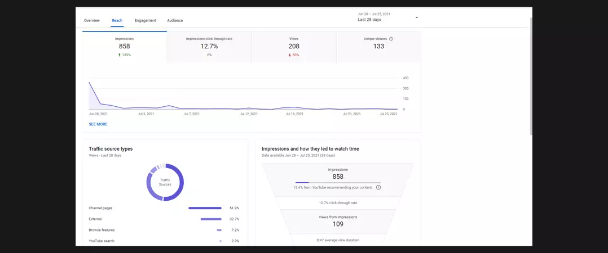
Impressions and Click-Through Rate
The YouTube algorithm registers an Impression every time your user sees your video thumbnail . YT calculates the impression click-through rate as the percentage of users who tapped the thumbnail when your video showed up.
While the click-through rate on the higher side is a favourable outcome, what you need to do is look at the watch-time and average view duration metrics before you can be confident that your thumbnail and targeted keywords are working as intended.
Views
The views section under the reach tab shows the total number of views a specific video generated, owing to your specified date range, location, and other filters.
Also Read: How to gain more Youtube views
Unique Viewers
The sum of users that have viewed your content at least once in the allotted date range. This metric does not show multiple views from a single person.
You also have additional options…
Traffic Source Types
Where users find your videos:
Traffic Source: External
Websites and applications that embed or link your videos on their web pages. Data about embedded videos before June 15, 2015, will not be available.
Traffic Source: Playlist
Here, you will find playlists with your videos – these are popular with the audience. Your playlist can also be one of them.
Traffic Source: Suggested Videos
Users that come to your channel from your videos appearing in the suggestion section and via links in the video description.
Traffic Source: YouTube Search
Viewers search terms that brought them to your keyword-optimized videos.
Impressions and How They Lead to Watch Time
This section shows the number of times your video thumbnail appeared in front of your target audience. What percentage of those thumbnail impressions resulted in a user's view (click-through rate), and how those views brought you more watch time? Please note that the views and watch time that did not result from Impressions will not show up in this report.
3. Engagement Tab
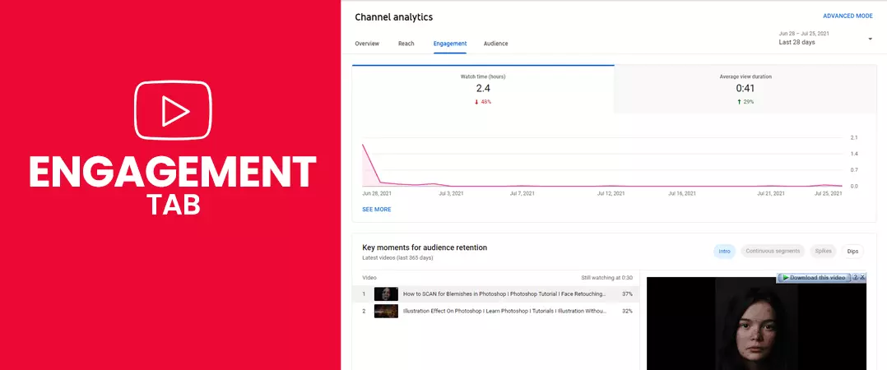
Watch Time (Hours)
An accumulated sum of hours that your audience spent viewing your channel content.
Average View Duration
This is the average watch time in minutes gathered per view for a specific content, select date range, region, and other criteria.
In the engagement tab, you will also find the following…
Top Videos
This section shows you your top-performing videos for the selected date range. As your channel grows, you can capitalize on this insight to plan your content in line with popular trends. Buy non-drop YouTube Likes to boost your channel growth.
Top Videos by End Screen
YouTube has a feature called end screen that lets you promote your other videos, playlist, another channel, and even your website. Here, you will see the videos that have the end screen with the most clicks from users.
Top Playlist
Shows you playlists that brought your channel the maximum watch time.
Also Read: How to create & manage YouTube playlists
Top Cards
Like end screens, you have cards that pop up anywhere in your video and help you promote your other content, playlists, e-commerce store, etc. You can undertake polls. Here you will see your channel's high-performing cards – the ones that got the most clicks from your viewers.
Top-End Screen Element Types
This part of the engagement tab shows you the end screen element types that got the most clicks from your audience.
4. The Audience Tab
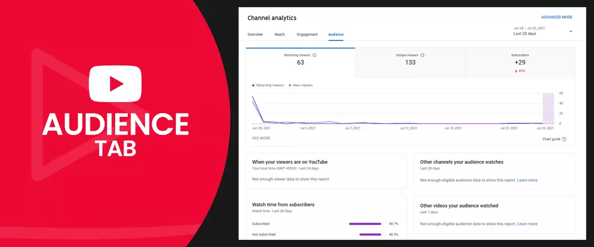
When Your Viewers Are on YouTube
Here, you will witness a bar chart showing the days and times when most of your audience is active on YouTube. The information is vital as it helps schedule your uploads at the right time. If you use the community tab to engage with your viewers, then ensure that you have additional help to create posts and reply to comments at optimal intervals.
Watch Time from Subscribers
The total duration of watch time you accumulate on your channel is shared between subscribers and non-subscribers.
Other Channels Audience Watches
This report shows channels that your content viewers also visit. YT sorts the data by the total number of users who have seen both channels regularly in the past 28 days.
Audience Demographics
You should keep tabs on your viewers' age, gender, and location. This information will help you create videos that will appeal to your target audience. You can also use these insights to produce content for a new segment of users.
You can find details about your audience's age and gender in the 'Age and gender' section. Likewise, you can find locations info in the 'Top geographies.'
Other Videos Your Audience Watched
The report shows videos from different channels that your audience recently viewed. The results are arranged by the total users that viewed these videos in the past seven days.
Top Subtitles/CC Languages
In this report, you can look at the segment of your audience that prefers watching content using subtitles.
Comment Tab in YouTube Studio
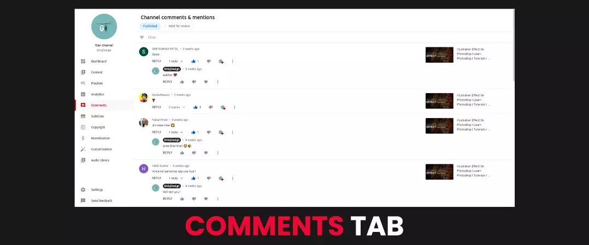
How to Check Comments You Receive on Your Channel Video
Step 1: sign in with your account.
Step 2: Navigate to YouTube studio.
Step 3: Click on comments on the left-hand column of your screen.
Step 4: you can toggle between published and held for review.
- Published: comments that are visible to everyone that comes to watch your video.
- Held for review: Depending upon how you have configured your settings, YT will keep back comments for evaluation which the algorithm has flagged as spam.
Initially won't have this problem dealing with comments since you are starting as a YouTuber and don't have many videos. But as your channel grows with more content, you will receive hundreds of thousands of comments challenging to manage, especially if you do not have additional support. So, what can you do to make it easier on yourself? - YouTube has provided a filter option at the top, which you can use to check comments of your interest. You can sort comments based on a specific text, the ones awaiting a response, comments with questions, and much more.
Reply To Published Comments
Engaging with those that want to associate with your channel is vital for building a strong YouTube community.
When you are on the 'Published' tab, you can:
Reply: With the reply option, you can respond to a user's comment directly.
Heart: it is physically not possible to reply to each comment that you receive. As such, you can heart comment as a mark of your appreciation.
Like: press the thumbs up icon to like on a comment.
Dislike: similarly, to dislike a comment, click the thumbs down icon.
Pin: Out of all the comments you get, some stand out, and others who come to watch your video should see them. Go to 'Select more' (icon with three vertical dots), then click 'Pin' to showcase a comment at the start of the page.
Go Over Comments Held in Review
When you publish videos, you receive different types of comments. Some are legit and waiting for your approval, whereas others may be spam and have no place in your comment section - these are the ones you should remove.
In line with your configuration, comments flagged by the platform show up in the "Held for review" tab - awaiting the following actions from the administrators.
- Approve: click the tick icon of approval to publish the comment on your video.
- Remove: clicking on the trash icon will delete the comment.
- Report spam or abuse: You can report spam or abuse by pressing the flag icon in the comment you received.
- Hide user: press on 'Select More' (icon with three vertical dots) and then click 'Hide user from channel'.
- Always approve: This option enables you to approve and publish comments from a particular user automatically. You have to 'Select more', then press 'Always approve comments’ from this user. You can find the Always approve option only in the 'Published' tab.
Assigned Comment Moderator
You can seek assistance in the form of a moderator to help manage comments that you receive on your channel videos.
The one you select as a moderator should have an active YouTube channel.
To add a moderator:
- Access your 'YouTube studio'.
- Press 'Settings' on the left menu.
- Press 'Community'.
- Insert channel URL of the moderator in the box with the 'Moderators' placeholder.
- Press 'Save'.
- Click the 'Remove' (X) icon next to the moderator to remove the moderator.
YouTube Studio Content Manager
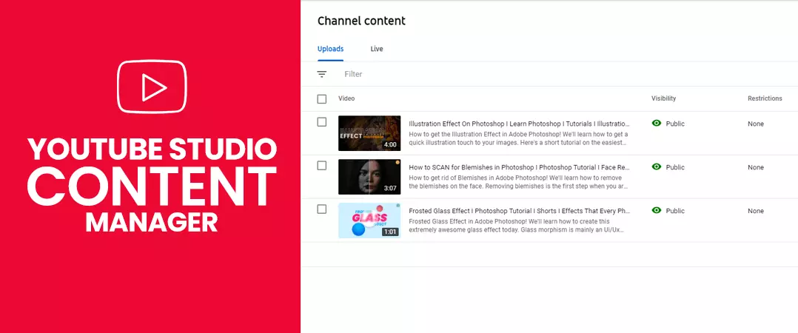
Once you publish your video on your channel, you may need to make some timely changes to expose your content to more viewers. For example, maybe your title needs to be optimized for better keywords, or you want to upload a more attractive and appealing thumbnail for a higher click-through rate (CTR).
You can make your desired changes by following the steps mentioned below.
How to Edit Videos Details from Desktop
Step 1: Sign in to YouTube and access your YouTube studio
Step 2: press the 'Content' option in the left menu.
Step 3: Select a video by clicking the title or thumbnail.
Step 4: edit video settings.
Step 5: Press 'Save' once you're satisfied with your changes.
Following are the video details that you can edit:
- Title
- Description
- Tags
- Playlists
- Playlists
- Thumbnail
- Monetization
- Visibility
- Language
- Syndication
- Comment settings
- Language
- Recording date
- Caption certification
- Licence and rights ownership
- Audience
- Shorts permissions
How to Edit Video Details from Mobile
- Step 1: Open the YouTube app on your device
- Step 2: click on the 'Library' option on the bottom right of your display
- Step 3: tap on 'Your videos'.
- Step 4: Click 'More' and then 'Edit, next to the video you want to edit.
- Step 5: Edit your settings.
- Step 6: Lastly, press 'SAVE'.
You can also change the below video settings.
- Title
- Description
- Tags
- Location
- Privacy
- Playlist
- Audience
Copyrights
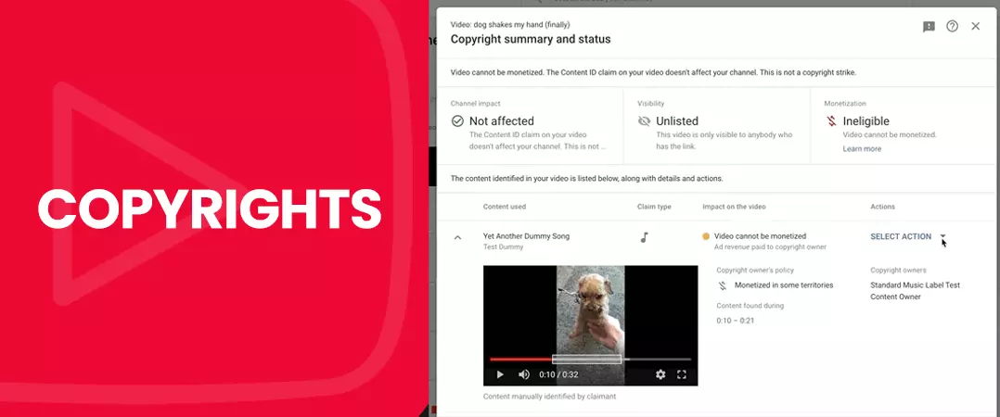
YouTube wants authenticity from its creator. Hence the search engine representatives were vocal against YouTubers using videos that they have not produced.
Without permission, you should avoid using content such as music tracks, snippets, programmes or videos whose copyright is held by another user.
You will find the copyright section on the left side of your YouTube Studio dashboard. Here, you can go through guidelines set by YT to safeguard creators' content.
- Removal request: YouTube gets 500 million hours of content uploaded every day. Therefore, it has a solid privacy policy to deal with videos/creators in constant violation of the platform rules. Their Advanced machine learning algorithm is capable of pinpointing and scrutinizing copyrighted content. You can deal with any copyright-related issues in this section.
- Your copyright status: This section shows how many copyright allegations you have against you, including your copyright status.
- Community guidelines status: Here, you can see the number of strikes your channel received for violating community guidelines.
YouTube Studio Audio Tab
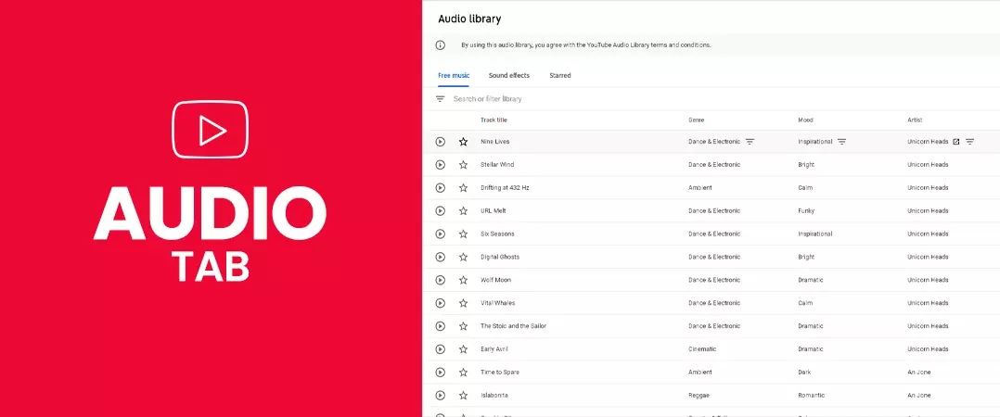
Courtesy of YouTube, you have YouTube audio library where you can access free music and sound effects to add to your videos.
How to Find the Audio Library
- Step 1: open YouTube studio.
- Step 2: Click on 'Audio Library' in the left column.
Now you can toggle between 'Free music', 'Sound effects' and 'Starred' from the navigation bar.
How to Search for Music of Your Choice
First, you will be in the 'Free music' section. Click on filters and search for your desired sound.
In the search, you can enter the song title, artist name, or keyword. You also have the option to sort music by genre, mood and track length.
You can click the star icon to save your favourite music. You can later find it in the 'Starred' tab.
How to Search for Sound Effects
Now move from the free music tab to the sound effects. Like before, use the filter and search bar to find sound effects of your choice.
You can sort sound effects by title or keyword; you can also filter by duration and category.
How to Play or Download a Track
Before you make your choice, you can press play to preview the track. If the music tickles your fancy, then press 'DOWNLOAD' to access the MP3 file.
YouTube Studio Best Practices
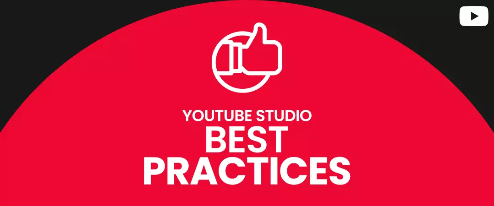
1. Get More Subscribers
As you go through multiple metrics available on YouTube creator studio, you will come across videos responsible for the majority of your subscribers.
These videos perform well with your viewers; hence you need to make sure that more people see them.
So, how can you promote your best-performing video?
i. Make It Your Channel Trailer
A YouTuber creates a trailer to, first and foremost to prompt new visitors to subscribe to their channel. And what is better to do this job than a video already winning them multiple users.
ii. Use Other Videos for Promotion
Using in-video features like cards and end screens, you can redirect traffic from one of your videos to another - the one that has brought you many subscribers.
iii. Insert Video at the Start of Your Playlist
Only write to place your best videos at the top of your playlist. This way, you can make sure that your popular content gets viewed first.
2. Look For High Performing Keywords
YouTube is a search engine. Hence it is not surprising that it maintains a repository of search terms that their network users use. You can use the auto-suggestion feature of YT to narrow down on the keywords that your target audience habitually utilizes to find relevant videos.
Think about the number of views you will generate when your videos are optimized for the right keywords.
3. Improve Your Playlists
Playlists come in handy when you have many videos, and you want to organize time into specific categories. Videos in the playlist are set to play automatically and therefore are a great way to increase views and generate more watch time for your content.
When you create your playlist, make sure to include targeted keywords in the title - key phrases your audience use for search. After all, you want people to find and watch content from your playlists.
If you want to create a new playlist, navigate to your YouTube Studio dashboard and press 'Playlist' on the left-hand column of your screen. Next, click on the blue 'NEW PLAYLIST' link in the top right corner.
4. Work on Scaling Your Impression Click through Rate
Why is this metric important? – well, it is an open book that tells you how attractive your video's title, description, and thumbnail were to your target audience. Earlier, if the content published got fewer views, YouTubers had no clue of the reason behind this decline. Was your title not doing its job, or are your videos not getting enough exposure - the correct answer always remained in the dark.
Now you can tell if Impressions or click rate is an obstacle that keeps your video from getting more views. You can test different titles, descriptions, and thumbnails to see if your click-through rate (CTR) improves.
5. Embed Subtitles in Your Videos
YouTube is the world's second most popular search engine. Hence, it gets audiences from all across the globe. Only a 16.4% of the total platform traffic comes from the US. Undoubtedly, when you make it big as a creator, you will get viewers from different countries and speaking other languages. To make it easier for them to consume your content, you need to insert subtitles & captions in your videos. Subtitles are a part of your metadata that is considered vital from a YT SEO perspective.
You have the subtitle option when you first upload your video:
- You have to click 'More Options'
- Select language/languages for your SRT file.
- Finally, upload your subtitle file.
Capitalize On the Traffic Source
Analytics on YouTube studio dashboard reveals the traffic source that gets us quality users. We can use the insights to optimize our content strategy. For example, if users coming from a website bring you higher watch time , you should emphasize that source (website). On The other hand, if the influx of traffic from your social media handles has dropped, you should identify the cause and strive for a quick resolution.
We hope you found value in the time you spent reading our article on “How to Use YouTube Studio in 2021”. We have more such content on our website, feel free to check them out.
Please share with others.